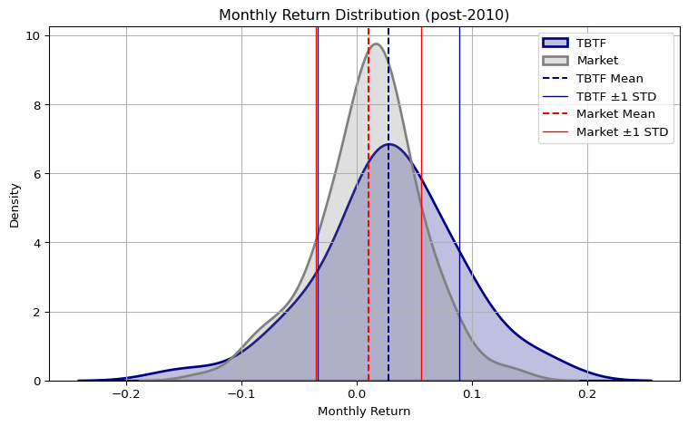
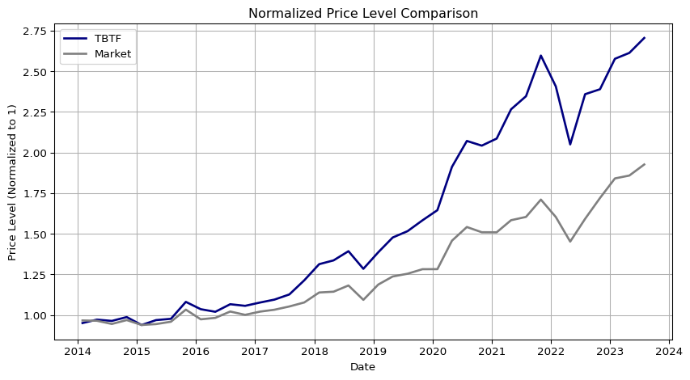

import seaborn as snsimport matplotlib.pyplot as pltimport numpy as npimport pandas as pdimport sqlite3cons = sqlite3.connect(database="../../tbtf.sqlite")crsp = pd.read_sql_query( sql="SELECT * FROM crsp", con=cons, parse_dates={"date"})
1 Out-of-Sample Evaluation Framework
The TBTF strategy relies on a structurally motivated weighting scheme that reflects not only asset-specific characteristics but also investor preferences toward risk concentration and downside protection. Two key parameters govern this framework:
Risk aversion parameter (\(\eta\)):
We employ a CRRA-type (Constant Relative Risk Aversion) transformation in the exponential weighting function, where asset weights are proportional to
Here, \(\hat{r}_i\) denotes the estimated expected return for asset \(i\) based on its in-sample historical performance, typically computed as the average excess return over the past 36 months. This formulation captures the intuition that investors tend to allocate more capital to assets with higher perceived profitability, especially under risk-averse preferences.
The parameter \(\eta > 0\) reflects the degree of risk aversion or, equivalently, the strength of capital concentration toward assets with higher expected returns. A higher \(\eta\) induces more aggressive overweighting of top-ranked stocks, thereby mimicking the structural capital lock-in observed in real-world markets. In this study, we set \(\eta = 3\), which strikes a balance between diversification and concentration, and is broadly consistent with utility curvature in standard asset pricing and consumption–savings models.
Tail probability threshold (\(p\)) for Omega ratio:
To quantify downside risk, we use the Omega ratio, which captures the full shape of the return distribution:
The threshold \(p\) defines the return level below which outcomes are considered losses. We set \(p = 0.01\), corresponding to a 1% monthly return threshold—commonly adopted as the minimum acceptable return (MAR) in institutional risk management. This conservative cutoff captures meaningful left-tail risk while avoiding excessive sensitivity to extreme outliers.
The strategy is trained on a rolling 36-month in-sample window to estimate optimal exponential weights across the top decile (state = 10) based on lagged market capitalization. Portfolios are rebalanced quarterly (rebalance_freq='3M') to reflect the long-term stickiness of capital among dominant firms, with structural filtering applied via \(\eta = 3\) and \(p = 0.01\).
To rigorously test the strategy’s robustness and economic significance, we conduct fully out-of-sample evaluations over two distinct macro-financial regimes:
# Out-of-sample Investment# 10 years in pre-2010 from 2000-01# 10 years in post-2010 from 2004-01import sysimport os# 현재 경로 기준으로 상위 디렉토리로 경로 추가sys.path.append(os.path.abspath('../..'))import tbtfresults_pre = tbtf.backtest_pipeline( crsp=crsp, in_end='1999-12-31', out_end='2009-12-31', in_sample_months=36, rebalance_freq='3M', weighting_method='exponential', top_n=10, state=10, eta=3, p=0.01)results_post = tbtf.backtest_pipeline( crsp=crsp, in_end='2013-12-31', out_end='2023-12-31', in_sample_months=36, rebalance_freq='3M', weighting_method='exponential', top_n=10, state=10, eta=3, p=0.01)# TBTF returns in the out-of-sampletbtf_returns_pre2010 = results_pre['returns'].set_index('date')['portfolio_return']tbtf_returns_post2010 = results_post['returns'].set_index('date')['portfolio_return']
[START] backtest_pipeline 호출됨
[INFO] Total sample: 1996-12-31 00:00:00 to 2009-12-31 00:00:00
[INFO] Total Out-of-sample: 2000-01-31 00:00:00 to 2009-12-31 00:00:00
[DONE] Total returns recorded: 39
[START] backtest_pipeline 호출됨
[INFO] Total sample: 2010-12-31 00:00:00 to 2023-12-31 00:00:00
[INFO] Total Out-of-sample: 2014-01-31 00:00:00 to 2023-12-31 00:00:00
[DONE] Total returns recorded: 39
2 Comparative Distributional Analysis: Pre-2010 vs. Post-2010
To assess the structural evolution of market efficiency and capital concentration, we compare the TBTF portfolio’s out-of-sample return distributions against the Fama-French market portfolio return, denoted as mkt_ret. This return series is sourced directly from the Fama-French data library and corresponds to the aggregate U.S. stock market return including dividends.
The comparison is conducted across two distinct macro-financial regimes:
Pre-2010 period: 2000–2009 (trained on data up to 1999)
Post-2010 period: 2014–2023 (trained on data up to 2013)
Monthly Return Distribution of TBTF vs. Market (Pre-2010 vs. Post-2010)

Distributional Shifts from this comparative analysis are as follows:
In the pre-2010 window, the TBTF and market portfolios exhibit similar interquartile ranges (IQR), indicating comparable volatility levels. However, the mean return is higher for the market, suggesting that TBTF underperformed not due to risk but due to return inefficiency. TBTF’s distribution is relatively symmetric, while the market shows mild left-skewness. Notably, TBTF exhibits high kurtosis, indicating heavier tails and more frequent extreme outcomes, both positive and negative.
In the post-2010 period, the relationship reverses. While the market portfolio’s standard deviation declines, TBTF not only achieves a higher mean return, but also exhibits superior interquartile positioning—especially in the median and upper quartile. The lower quartile remains similar across both, indicating equivalent downside frequency, but TBTF captures the upside more effectively. In terms of shape, the market distribution becomes more symmetric, whereas TBTF turns left-skewed, reflecting an asymmetric probability mass concentrated just above the loss threshold—consistent with convex return dynamics and infrequent but large outperformance events.
In summary, the roles of the two distributions are structurally inverted across regimes. Pre-2010, TBTF resembled a symmetrical bell-shaped curve with fat tails, while the market was mildly skewed. Post-2010, the market distribution becomes tighter and more symmetric, whereas TBTF becomes more asymmetric and wider, capturing structural convexity in return outcomes. This shift aligns with a regime transition in capital flows and market microstructure following the QE era.
Price Level Comparison: TBTF vs. Market (Pre-2010 vs. Post-2010)

Code
pre_index = pd.read_sql_query( sql="SELECT * FROM pre_index", con=cons, parse_dates={"date"})post_index = pd.read_sql_query( sql="SELECT * FROM post_index", con=cons, parse_dates={"date"})post_ff = pd.read_sql_query( sql="SELECT * FROM post_ff", con=cons, parse_dates={"date"})
3 Other Benchmark Comparison
To further contextualize the performance of the TBTF strategy, we compare it against a wide set of benchmark portfolios, including major U.S. equity indices and Fama-French style-sorted portfolios. Each comparison is presented as a paired figure showing the monthly return distribution (left) and the cumulative price level evolution (right).
3.1 Pre-2010: Market Dominance and Diversification
In the pre-2010 sample, TBTF underperforms all major benchmarks both in terms of average monthly returns and cumulative price levels:
Compared to the Dow Jones Industrial Average (^DJI) and the Nasdaq 100 (^NDX), TBTF lags significantly in mean returns, with its average return even falling below zero. This underperformance is visible in both the return histogram and the flattened price trajectory.
The shape of the return distributions further illustrates this divergence. While ^DJI displays a concentrated bell-shaped curve reflecting strong diversification benefits across sectors, TBTF’s distribution is wider and flatter, and ^NDX’s distribution appears even flatter and fatter-tailed—consistent with its tech-heavy composition and lower effective diversification.
These findings imply that during this regime, the structural capital lock-in emphasized by TBTF was not yet rewarded, and sectoral diversification still played a dominant role in driving returns.
3.2 Post-2010: Structural Convexity and Breakaway Performance
Post-2010, the TBTF strategy decisively outperforms all benchmark portfolios, not only in cumulative performance but also in distributional characteristics:
Most strikingly, TBTF’s return distribution exhibits bi-modality, a rare phenomenon in empirical asset returns. Both modes are positive, with the second, larger mode emerging after recovering from a brief period of negative returns during late 2021 to early 2022. This distributional structure reflects a convex outcome space where moderate and large gains dominate.
DIA, which tracks the 30 blue-chip constituents of ^DJI, displays a symmetric but left-skewed return profile and a relatively muted price level curve. By contrast, TBTF rapidly diverges post-2019, widening the performance gap year by year.
QQQ, representing the Nasdaq 100 ETF, initially tracks TBTF closely between 2014 and 2020. However, since 2021, TBTF begins to consistently outperform QQQ, suggesting a regime shift where capital dominance surpasses even tech momentum.
SPY, representing the broader S&P 500, sits between DIA and QQQ in both return level and distributional shape. Its distribution approximates a classic symmetric bell curve, but lacks the convexity and upside concentration observed in TBTF.
The return distribution of SPY is unimodal and centered, offering a useful contrast to the dual-modal, right-tilted structure of TBTF.
We also include value-weighted and equal-weighted Fama-French 3x2 portfolios constructed from top 20% market cap stocks (ME5) sorted by prior return (PRIOR1–5):
Among value-weighted portfolios, PRIOR5 (ff_b) performs best, followed by PRIOR3 (ff_m) and PRIOR1 (ff_s). This gradient suggests a standard momentum pattern. However, TBTF outpaces all of them, with its price level evolving geometrically, while FF portfolios show only linear growth trends over the same horizon.
Among equal-weighted portfolios, performance is more muted. Notably, ff_e_s (equal-weighted ME5 × PRIOR1) performs slightly better than its value-weighted counterpart, suggesting that in low-momentum groups, idiosyncratic selection beats size dominance.
Yet again, none of the FF portfolios, whether value- or equal-weighted, come close to TBTF’s performance, emphasizing that TBTF’s structural logic—built on capital persistence and lock-in rather than factor exposure—offers a fundamentally different return engine.
3.4 Interpretation
The above comparisons reinforce the hypothesis that post-2010 capital markets have undergone a structural realignment. In this new regime, traditional sources of diversification and factor exposure lose explanatory power, while the concentration of capital into a select few entities generates persistent excess returns. The TBTF strategy captures this realignment directly through its construction, thereby achieving outperformance not through luck or timing, but by aligning itself with the new architecture of capital allocation in the post-QE world.
4 Risk-Adjusted Performance Metrics
To benchmark the performance of the TBTF strategy against traditional market indices, we compute a suite of risk-adjusted performance metrics over both the pre-2010 and post-2010 periods. These include:
Sharpe ratio: Mean excess return normalized by standard deviation.
Sortino ratio: Return per unit of downside deviation, focusing on losses.
Omega ratio: A distribution-sensitive metric measuring the ratio of gains above a threshold to losses below it.
Maximum drawdown: Largest peak-to-trough loss during the sample period.
Expected CRRA utility: A model-based expected utility under constant relative risk aversion.
The final metric—Expected CRRA Utility—provides a theoretically grounded welfare measure, widely used in academic finance. Unlike Sharpe or Sortino ratios, CRRA utility reflects higher-order moments of the return distribution, such as skewness and kurtosis, which are especially relevant for TBTF’s left-skewed but convex payoff structure. For a CRRA coefficient \(\gamma > 0\), utility is computed as:
The risk-adjusted performance metrics for the pre-2010 period reveal that the TBTF strategy significantly underperforms relative to traditional benchmarks such as the Dow Jones Industrial Average (DJI) and Nasdaq 100 (NDX). While both benchmarks deliver positive annualized returns—5.3% for DJI and 8.8% for NDX—TBTF produces a negative average return of -10.2%, resulting in uniformly negative values for all performance ratios.
Sharpe and Sortino ratios for TBTF are both negative, indicating that the strategy failed to compensate for volatility and downside risk during this period.
The Omega ratio of TBTF (0.40) is substantially lower than that of NDX (1.03) and DJI (0.76), further emphasizing poor downside-adjusted performance.
Maximum drawdown, surprisingly, is less severe for TBTF (-31.2%) than for NDX (-81.1%), though this is largely due to TBTF’s failure to experience large upswings, not resilience in downturns.
The Expected CRRA utility for TBTF is negative (-0.0119), in stark contrast to the positive values for DJI (+0.0021). This indicates that, for a moderately risk-averse investor (\(\gamma = 3\)), TBTF would have been strictly dominated by holding a benchmark index.
In terms of distribution shape, TBTF displays near-zero skewness and moderate excess kurtosis, suggesting symmetric but fat-tailed returns. This is consistent with the earlier observation that pre-2010 TBTF returns resembled a bell curve with heavy tails, whereas NDX was left-skewed and more extreme in both tails.
Taken together, these results indicate that during the pre-QE, industrial-cycle-driven market regime, the structural logic behind TBTF—capital lock-in and size dominance—did not translate into superior returns. Instead, diversification (as in DJI) and tech momentum (as in NDX) dominated portfolio performance.
The post-2010 performance metrics tell a dramatically different story. In this regime—characterized by sustained quantitative easing, historically low interest rates, and capital concentration—the TBTF strategy not only outperforms all benchmark portfolios in raw returns, but does so decisively across all risk-adjusted dimensions.
Annualized return for TBTF reaches 35.8%, more than twice that of QQQ (16.9%) and over three times that of SPY, VTI, and DIA (all below 11%).
The Sharpe ratio of TBTF (1.57) is by far the highest, indicating a return per unit of volatility unmatched by any benchmark. More notably, the Sortino ratio (2.21) and Omega ratio (2.17) reveal TBTF’s asymmetric protection against downside, a signature feature of its convex payoff structure.
Maximum drawdown is relatively modest at -21.0%, despite the high return level, and the Calmar ratio (1.70) reflects this efficiency. By comparison, QQQ suffers a deeper drawdown (-33.1%) with only a third of the Calmar ratio.
Crucially, the Expected CRRA utility for TBTF is +0.0214, more than double that of QQQ (+0.0103), and significantly above other diversified portfolios (SPY: +0.0067, VTI: +0.0065, DIA: +0.0059). For a moderately risk-averse investor (\(\gamma = 3\)), TBTF represents a clear welfare-maximizing choice.
From a distributional perspective, TBTF shows mild negative skewness (Fisher: -0.35) and positive excess kurtosis (1.13), consistent with earlier evidence of bimodality and tail concentration. In contrast, SPY and VTI are more symmetric but exhibit thinner tails, which limits their upside potential.
QQQ, while historically strong, demonstrates a flattened distribution with lower Omega and Sortino ratios, suggesting diminished downside protection relative to TBTF in recent years.
These results reinforce the view that the post-2010 market environment systematically rewarded capital dominance over traditional diversification or momentum strategies. TBTF’s success is not just statistically significant, but economically meaningful across every major dimension of portfolio evaluation—returns, risk, asymmetry, drawdowns, and investor utility.
5 Drawdown and Turnover
In this section, we evaluate the downside risk exposure and implementation feasibility of the TBTF strategy. Two key dimensions are analyzed:
Maximum Drawdown: Measures the largest peak-to-trough decline in cumulative return over the evaluation period.
Portfolio Turnover: Assesses the degree of rebalancing required, with lower turnover implying lower transaction costs and higher implementability.
5.1 Drawdown Dynamics
While TBTF suffered deeper losses than ^DJI during the 2008 crisis, its post-2010 drawdown profile proved significantly more resilient than traditional style portfolios and benchmark ETFs, with a rapid recovery trajectory by 2023.
Code
import matplotlib.pyplot as pltimport matplotlib.dates as mdatesdef compute_drawdown(return_series: pd.Series) -> pd.Series: cumulative = (1+ return_series).cumprod() peak = cumulative.cummax() drawdown = (cumulative - peak) / peakreturn drawdowndef plot_drawdown(tbtf_returns_raw, benchmark_df, title="Drawdown Profile"): plt.figure(figsize=(10, 4))# --- TBTF 처리 ---ifisinstance(tbtf_returns_raw, pd.DataFrame):if'date'in tbtf_returns_raw.columns: tbtf_returns_raw = tbtf_returns_raw.set_index(pd.to_datetime(tbtf_returns_raw['date'])) tbtf_returns = tbtf_returns_raw.select_dtypes(include='number').iloc[:, 0]elifisinstance(tbtf_returns_raw, pd.Series): tbtf_returns = tbtf_returns_rawelse:raiseTypeError("tbtf_returns_raw must be DataFrame or Series.") tbtf_returns.index = pd.to_datetime(tbtf_returns.index) tbtf_drawdown = compute_drawdown(tbtf_returns) plt.plot(tbtf_drawdown.index, tbtf_drawdown.values, label='TBTF', color='black', linewidth=2)# --- 벤치마크 DataFrame 처리 ---if'date'in benchmark_df.columns: benchmark_df = benchmark_df.set_index(pd.to_datetime(benchmark_df['date']))else: benchmark_df.index = pd.to_datetime(benchmark_df.index) benchmark_df = benchmark_df.select_dtypes(include='number') # 숫자만for col in benchmark_df.columns: series = benchmark_df[col].reindex(tbtf_returns.index)if series.isna().all():continue# 완전히 비어있으면 skip drawdown = compute_drawdown(series) plt.plot(drawdown.index, drawdown.values, label=col, alpha=0.7)# --- x축 날짜 포맷 --- ax = plt.gca() ax.xaxis.set_major_locator(mdates.YearLocator()) ax.xaxis.set_major_formatter(mdates.DateFormatter('%Y')) plt.xticks(rotation=45)# --- 마무리 --- plt.title(title) plt.ylabel("Drawdown") plt.xlabel("Date") plt.legend() plt.grid(True) plt.tight_layout() plt.show()
During the first decade, the TBTF strategy underperformed the Dow Jones Industrial Average (^DJI) in terms of drawdown resilience. While TBTF, ^DJI, and ^NDX all exhibited relatively similar patterns prior to the 2008 Global Financial Crisis, the drawdown plot reveals that TBTF experienced a sharper decline during the crisis episode. This suggests that TBTF’s concentrated exposure to the largest-cap firms provided limited diversification benefit during systemic tail events, particularly in contrast to the more balanced composition of the ^DJI.
In contrast, during the second decade, TBTF demonstrated superior drawdown performance relative to all benchmark ETFs, particularly until late 2021. The strategy maintained shallow drawdowns through several volatility cycles, including the COVID-19 shock and inflation-driven rate adjustments, reflecting its structural bias toward persistent market leaders.
However, in late 2021, TBTF experienced a notable drawdown phase, closely mirrored by the QQQ, indicating common exposure to high-growth tech stocks. Despite this synchronized decline, both TBTF and QQQ rebounded strongly by 2023, surpassing prior peaks.
Notably, the Fama-French style-sorted portfolios (ME×PRIOR) exhibited deeper and more persistent drawdowns throughout the post-2010 period. These portfolios consistently underperformed TBTF in drawdown magnitude, highlighting the limitations of conventional size- and momentum-based constructions in capturing the structural dominance embedded in TBTF’s selection mechanism.
5.2 TBTF Turnover
Code
import matplotlib.pyplot as pltimport matplotlib.dates as mdatesdef plot_turnover(turnover_df, title="TBTF Turnover Over Time"): df = turnover_df.copy() df['rebalance_date'] = pd.to_datetime(df['rebalance_date']) df.set_index('rebalance_date', inplace=True) plt.figure(figsize=(10, 3)) plt.plot(df.index, df['turnover'], marker='o', color='darkgreen', linewidth=1.5)# x축 날짜 format ax = plt.gca() ax.xaxis.set_major_locator(mdates.YearLocator()) ax.xaxis.set_major_formatter(mdates.DateFormatter('%Y')) plt.xticks(rotation=45) plt.title(title) plt.ylabel("Turnover (sum of abs weight changes)") plt.xlabel("Rebalance Date") plt.grid(True) plt.tight_layout() plt.show()
The TBTF strategy rebalances quarterly, yet maintains a remarkably steady turnover profile across both subperiods, highlighting its structural persistence and practical implementability.
Period
Mean Turnover
Std Dev
Pre-2010
0.22
0.12
Post-2010
0.15
0.10
This low and stable turnover suggests that, although the strategy updates weights every three months, the actual reallocation of capital is limited. This is particularly meaningful given TBTF’s concentrated structure: the top 10 stocks by market capitalization.
To further explore the internal mechanics of turnover, we examine the group-rank positions of stocks entering and exiting the portfolio:
The average max_diff_group_rank is approximately 1–2, indicating that stocks removed from the TBTF portfolio were typically ranked 9th or 10th before exit.
The average min_diff_group_rank is approximately 3–3.5, suggesting that newly entering stocks typically displaced members ranked around 6th or 7th.
This pattern implies a core–fringe structure within the TBTF portfolio:
the top-ranked firms (1st–5th) exhibit strong persistence, while changes are concentrated at the margin of the selection, reducing both instability and turnover-related costs.
6 Implications
The TBTF strategy consistently delivers strong out-of-sample performance, characterized by high risk-adjusted returns, stable drawdowns, and low turnover. These patterns persist across both pre- and post-2010 market regimes and cannot be explained by conventional size or momentum factors.
What distinguishes TBTF is not merely statistical outperformance but its reflection of a persistent capital hierarchy, in which dominant firms retain market share through institutional mechanisms rather than pure productivity or risk-taking.
Whereas traditional models explain return premia through exposure to priced risk, TBTF accumulates return through insulation from risk—via passive flows, platform effects, and embedded expectations. In this sense, market power does not demand a premium—it neutralizes the need for one.
This invites a reframing of modern asset pricing:
> Return without risk is no longer a puzzle, but a feature of financial capitalism.
Readers seeking formal modeling of regime persistence and capital asymmetry are referred to Section 4. Here, we have focused on empirical validation, leaving latent structure estimation to the structural section.
In the following section, we assess whether TBTF’s performance is robust to alternative specifications: selection cutoffs, rebalancing intervals, weighting schemes, and estimation windows. This stress-testing is essential to distinguish true structural effects from parameter-driven artifacts.